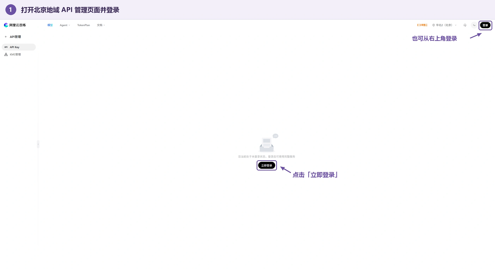
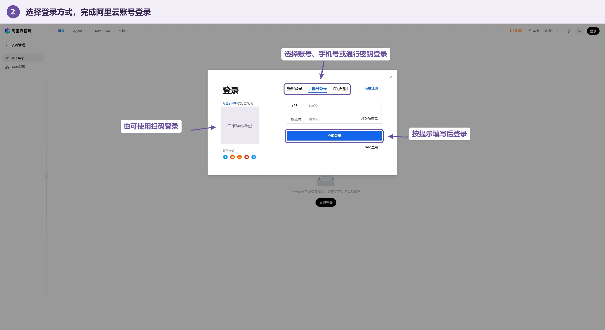
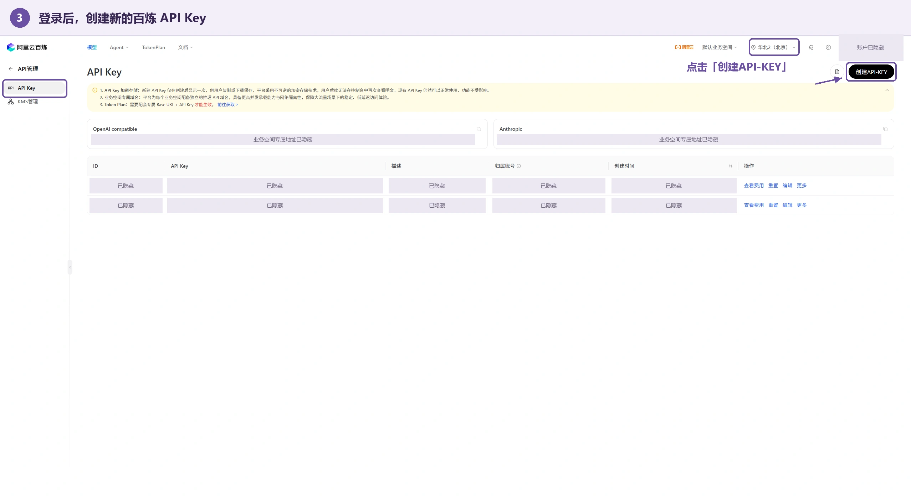
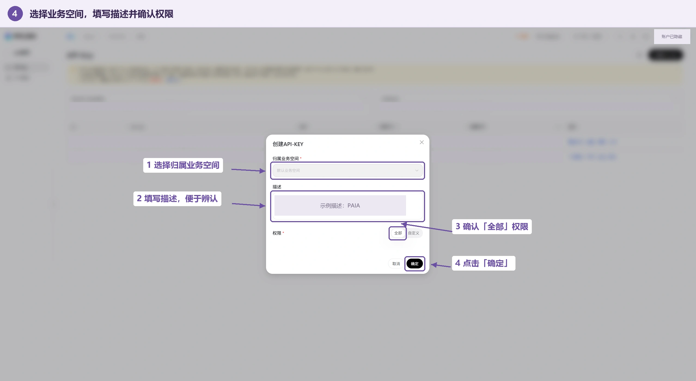
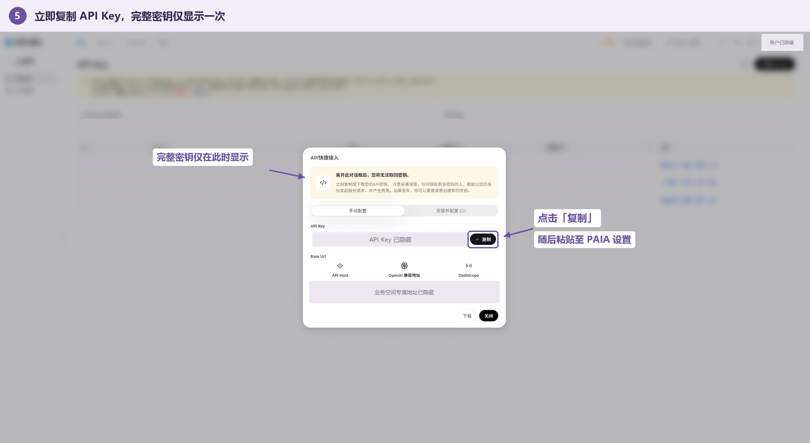
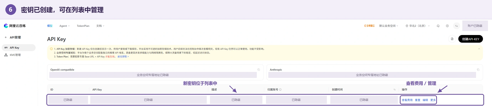

使用教程 / 快速开始
更新于 2026.09.14
快速开始 · 01 · 推荐方案
电脑申请百炼 API Key
建议优先使用电脑申请，再将密钥填入手机上的 PAIA。
电脑浏览器中的百炼控制台更便于查找 API Key 管理入口和完成创建。即使正在手机上阅读，也建议在电脑上打开下方官方链接申请；暂时没有电脑时，可尝试手机申请备用方案。
直接打开阿里云百炼 API Key 管理（北京） ↗，无需从控制台首页逐级查找。API Key 用于验证模型调用身份，调用费用计入所属的阿里云账号。
- 登录账号
- 创建密钥
- 复制并保存
- 填入 PAIA
1打开 API Key 页面并登录
打开上方链接后，未登录用户可以点击右上角“登录”，或页面中央的“立即登录”。已经登录可直接前往第 3 步。

两个登录入口任选其一
2选择登录方式
在弹窗中选择账号登录、手机号登录或扫码登录，按页面提示完成验证。没有账号时，点击“前往注册”。首次使用百炼时，按控制台提示完成必要的认证与服务开通。

仅在阿里云官方页面输入登录信息
3创建 API Key
确认右上角地域为华北 2（北京），左侧选中“API Key”，然后点击右上角“创建 API-KEY”。PAIA 本教程使用北京地域接口，其他地域的密钥不能直接混用。

若已安全保存可用的完整密钥，可直接在 PAIA 中填写
4填写创建信息
确认归属业务空间，个人初次使用通常选择“默认业务空间”；“描述”可填写 PAIA，便于之后识别用途。图示权限为“全部”；如采用自定义权限，需要包含应用使用的模型服务。确认后点击右下角“确定”。

团队账号请由管理员确认业务空间与模型权限
5立即复制并妥善保存密钥
创建成功后，在“API 快捷接入”弹窗保留“手动配置”，点击 API Key 右侧的“复制”。回到 PAIA，将完整密钥粘贴至 Bailian API Key。本步骤不需要安装 CLI。
在电脑与手机之间传递密钥时，请使用自己可信的设备与传输方式，例如个人密码管理器的安全同步。不要发送到群聊、公开网页或反馈表单；在手机上确认填写成功后，清理不再需要的临时副本。

图中密钥已遮盖，请使用自己的密钥
6确认创建结果，回到 PAIA 完成配置
返回列表后，可以通过“描述”中的 PAIA 找到新建记录。列表用于管理密钥，不代表可以再次查看完整内容。接下来按在应用中填写 API Key完成两项连接测试，滚动到设置页底部并点击“保存设置”。

以 PAIA 描述识别本次创建的密钥
截图保留原有页面范围，仅移除浏览器工具栏并遮盖账号、密钥、专属地址及登录二维码。点击图片可查看大图。百炼界面可能随版本更新，请以实际页面为准。
密钥与业务空间 ID 的区别
两者不能互相替代，也不应填写阿里云登录密码或 AccessKey ID。完整 API Key 仅填写到 PAIA 设置中，不要发送到反馈、聊天或公开截图中。
快速开始 · 02
在 PAIA 中填写 API Key
连接百炼模型服务，开始使用转写、翻译、会议问答与纪要。
准备好北京地域的百炼 API Key 后，按下列步骤配置。尚未申请密钥，建议先阅读电脑申请教程（推荐）；暂时没有电脑时，可尝试手机申请备用方案。GPT 密钥为可选配置，初次使用可以留空。
- 打开侧栏
- 进入设置
- 填写并测试
- 保存设置
1打开会话侧栏
在主界面点击左上角的三横线图标，打开会话侧栏。
 主界面左上角
主界面左上角
2进入设置
点击侧栏左下角的齿轮图标“设置”，进入配置页面。
 会话侧栏底部
会话侧栏底部
3粘贴百炼密钥
找到 Bailian API Key，粘贴完整密钥，再点击其下方的“测试连接”。这项测试验证实时转写连接。
 密钥区域已作隐私遮盖
密钥区域已作隐私遮盖
4验证会议模型
继续向下找到“主模型连接”，点击这一项的“测试连接”，验证提问和纪要使用的模型。两项测试需要分别进行。
 主模型名称以安装版本显示为准
主模型名称以安装版本显示为准
5保存设置
滑动到设置页最底部，点击紫色的“保存设置”按钮。保存后再回到会话页面。
测试成功不会代替保存。直接点击返回，刚填写的配置不会保存。
 设置页最底部
设置页最底部
图示保留通知栏以下的完整手机界面；顶部系统状态栏已裁除，个人会话及密钥信息已遮盖。点击图片可查看整屏，继续点击可放大查看细节。不同版本的界面文字可能略有差异。
快速开始 · 03 · 备用方案
手机申请百炼 API Key
建议优先使用电脑申请；暂时没有电脑时，可尝试以下手机操作。
已经有可用的完整密钥？直接前往在应用中填写 API Key，无需重新申请。
- 电脑版网站
- 登录百炼
- 创建并复制
- 返回 PAIA
1开启“电脑版网站”
使用手机上的独立浏览器打开本教程。若当前在聊天软件内，先从右上角菜单选择“在浏览器中打开”。
打开浏览器菜单，找到并开启“电脑版网站”、“桌面版网站”或“请求桌面网站”。这个设置只改变网页显示方式，不需要连接电脑。
找不到电脑版选项？
Chrome、Edge 等浏览器通常将该选项放在菜单中。部分浏览器需要进入设置，查找“网页浏览设置”或“浏览器标识”，将标识切换为“电脑 / 桌面”。不同浏览器版本的名称和位置可能不同。
有些浏览器按网站保存这个选项：打开百炼后，请在百炼页面的浏览器菜单中再确认一次。完成申请后可以关闭电脑版模式。
2重新打开 API Key 管理
打开百炼 API Key 管理（北京） ↗
请在开启电脑版后重新点击上方入口，不要只刷新带 #/model-market 的旧页面。正确页面应显示“API Key”标题，未登录时会有“登录 / 立即登录”。
若新标签页仍进入模型广场，在该标签页中开启电脑版，然后重新输入上方链接；也可换用另一个支持电脑版网站的浏览器。
查看正确页面的参考图
电脑版界面参考；手机上的缩放和排布可能不同3登录并确认北京地域
点击“登录”，在同一部手机上优先使用手机号验证码或账号密码登录。没有账号时，按“前往注册”的提示操作；首次使用时，按控制台要求完成认证与服务开通。
确认地域为“华北 2（北京）”。页面太小时，可横屏并双指放大，找到右上角的“创建 API-KEY”。PAIA 本教程使用北京地域接口，其他地域密钥不能直接混用。
查看“创建 API-KEY”位置
电脑版界面参考，创建按钮位于右上角4创建自己的密钥
选择归属业务空间，个人初次使用通常为“默认业务空间”；“描述”可填写 PAIA，方便识别用途。确认模型权限后点击“确定”。
图示权限为“全部”。若使用自定义权限，需要包含 PAIA 使用的模型服务；团队用户请由管理员确认空间和授权。
查看创建信息填写参考图
电脑版界面参考；只需创建自己的 API Key5立即复制完整密钥
创建成功后，在“API 快捷接入”弹窗中保留“手动配置”，点击 API Key 右侧的“复制”。无需安装 CLI，也不要复制下方的 Base URL 代替密钥。
查看复制按钮位置
电脑版界面参考，点击 API Key 右侧“复制”6切回 PAIA，粘贴并保存
使用手机的最近任务界面切回 PAIA。在“侧栏 → 设置 → Bailian API Key”中长按输入框，选择“粘贴”。请粘贴完整内容，不要添加空格或换行。
分别运行密钥下方和“主模型连接”处的“测试连接”，然后滚动到设置页最底部，点击“保存设置”。GPT 密钥为可选配置。
查看 PAIA 设置页的完整图文步骤 →
仍然无法申请？
登录后又回到模型广场
登录过程可能打开了新标签页。确认新标签页也启用了电脑版网站，再通过本页第 2 步的干净链接返回管理页。不要在带 #/model-market 的地址上反复刷新。
没有“创建 API-KEY”按钮
先确认页面标题为 API Key，而非模型广场。若页面正确，尝试横屏或缩小页面检查右上角；团队账号还需由超级管理员或业务空间管理员确认创建权限。
已经关闭弹窗，找不到完整密钥
不要使用列表中的打码字符串。按百炼提示重新创建密钥，或确认影响范围后重置，再更新 PAIA 中的配置。重置可能影响仍在使用旧密钥的其他应用。
已验证手机浏览器标识会触发模型广场跳转、电脑浏览器标识可进入 API Key 管理页。登录后创建流程以百炼实际界面为准；参考图为电脑版页面，不是手机浏览器菜单截图。
快速开始 · 04
连接验证与业务空间
分别验证模型连接，让每项功能使用正确的配置。
两处“测试连接”分别验证什么？
灰色表示尚未测试；测试时显示连接状态，成功或失败后会显示对应提示和状态颜色。转写测试通过，不代表主模型或同声传译也已验证。修改密钥或模型后，应重新测试并保存设置。
填写同声传译的业务空间 ID
- 登录百炼控制台，确认地域为北京。
- 在当前业务空间信息或“业务空间管理”中，复制所选空间的 Workspace ID（业务空间 ID）。
- 回到 PAIA 设置，粘贴到“百炼业务空间 ID（同声传译）”。
- 确认该空间与 API Key 对应，选择翻译方向，然后滚动到底部保存设置。
业务空间 ID 是控制台分配的标识，不能自行填写空间名称、模型名称或手机号码。
完成一次简短的功能检查
返回主界面，开始一段短录音并说一句话，确认转写有内容。再打开翻译，说一句源语言，检查是否产生目标语言文字。最后发送一个简短问题，验证主模型是否能回答。
录音与协作
开始、暂停与继续录音
在同一个会话中记录完整的课程或会议。
开始一段录音
点击主界面底部中央的开始按钮。首次使用时，按系统提示允许麦克风权限；通知权限用于显示录音和后台任务状态。未配置密钥时仍可本地录音，在线转写、翻译和模型回答则需要对应配置。
暂停后继续
录音过程中再次点击中央按钮暂停。留在当前会话，点击开始即可继续记录，多段音频会归入同一会话。暂停录音不会自动生成会议纪要。
长录音与后台处理
音频会分段保存在本机，已完成的片段可在后台生成摘要索引，帮助之后的提问定位内容。预处理需要可用网络与百炼配置，长会话的处理时间和费用会随内容增加。
应用通过前台服务维持录音与后台任务。若系统限制后台运行，请在系统应用设置中检查 PAIA 的通知权限与电池管理权限；不同系统的入口名称可能不同。
录音前的准备
确认设备有足够空间，麦克风未被其他应用占用，并取得现场参与者的录音许可。重要内容建议在录音后及时导出音频。
录音与协作
实时转写与同声传译
跟随现场内容阅读原文与译文，两个模块可独立开关。
实时转写
点击底部“转写”按钮启用。录音开始后，识别文字会持续写入转写气泡。关闭时保留已有内容，再次开启后从重新启用时的音频继续处理，不自动补写关闭期间的内容。
同声传译
先在设置中完成百炼密钥与业务空间配置，选择翻译方向并保存。点击“翻译”按钮后，译文会出现在独立气泡中；录音前和录音中均可开关。
默认方向为英译中。需要汉译英时，在同声传译设置中切换方向并保存，再核对气泡状态。
折叠与复制
使用气泡右上角的折叠按钮收起长文本。转写和翻译折叠后保留末尾几行，便于关注最新内容；展开可阅读全文，复制按钮可复制气泡文字。
录音与协作
中途提问与现场笔记
同一个输入框，可以提问，也可以保存与现场时间关联的笔记。
在录音中提问
确认底部模式按钮显示“提问”，在输入框输入问题并点击发送。例如：“刚才这一部分的主要结论是什么？”提问会打开独立回答气泡，录音继续进行。
模型结合当前会话的音频摘要、相关音频片段、图片与笔记回答。询问当前进度时，建议明确写“刚才”或“最近这一段”；也可以在未录音时直接进行普通文字对话。
切换为笔记
点击底部“提问”模式按钮，切换为“笔记”。输入框显示“在此键入笔记”后，发送的内容会保存为笔记，不立即请求模型回答。再次点击按钮可切回提问。
笔记会记录提交时间，便于后续回答与纪要参考当时的上下文。时间记录用于辅助理解，不代表每张照片都已精确对齐到某一秒音频。
附上现场照片
点击输入框左侧相机按钮拍照，可连续添加多张。发送前在输入框上方检查预览，移除不需要的照片后再发送。提问和笔记两种模式都可以附图。
修改与重新回答
提问气泡右上角的编辑按钮可修改问题并调整图片。回答气泡右上角的重新生成按钮会使用当前可用的会话上下文再次回答。长按笔记或用户提问气泡，可删除对应内容并将其移出后续上下文。
录音与协作
生成会议纪要
将会话中的讨论、照片和笔记整理为可回顾的记录。
- 先暂停录音并等待音频保存完成，确认内容已记录在当前会话中。
- 点击底部“纪要”按钮，界面会显示纪要气泡和处理状态。
- 等待音频片段处理与模型输出，阅读生成的结论、要点和待办事项。
- 有新内容时，再次点击“纪要”或使用气泡的重新生成按钮，更新这份纪要。
纪要使用哪些资料？
纪要结合当前会话保存的音频、音频摘要、笔记与图片。模型可能进一步读取相关音频片段，转写气泡不是生成纪要的前置条件。
等待期间
长录音可能需要先处理多个音频片段。后台服务会继续执行任务，但应允许应用后台运行并保持网络可用。气泡的状态文字可用于区分音频处理与模型回答阶段。
核对后使用
生成内容可折叠、展开和复制。人物、数字、专业结论及行动项应结合原始资料确认；再次生成会替换原纪要内容，需保留旧稿时可先复制。
资料管理
历史会话与文件夹
按课程、项目或会议主题组织现场资料。
创建和切换会话
打开左上角侧栏，点击顶部加号创建新会话。点击历史会话可继续查看或提问；当前会话标题显示在主界面顶部。
重命名与删除
长按历史会话，可以手动修改标题或删除会话。纪要生成后可自动生成标题，手动名称便于按自己的方式整理。
使用文件夹
点击侧栏顶部的文件夹加号创建文件夹。通过会话的长按菜单，将现有会话复制到指定文件夹，再点击文件夹查看分类后的记录。
查看空间占用
历史会话下方的灰色文字显示其媒体和记录的空间占用估计。删除会话会清理不再被其他会话引用的关联媒体；共享资料可能仍由其他会话保留。
资料管理
查看原始资料，并将重要内容保存到应用之外。
查看与保存照片
点击气泡中的照片进入全屏查看。左右滑动可浏览整个会话中的照片，两指缩放可查看细节。点击保存按钮，将当前原图保存到本地相册，并留意图片查看界面的保存结果提示。
选择上传画质
设置中的“上传图片质量”控制模型请求使用的图片版本，不改变本地拍摄原图。普通场景可用“标准”；图表、公式或小字需要更高细节时可选择“原图”，但上传和响应可能更慢。
导出会话音频
先暂停录音并等待保存完成，再点击主界面标题栏右上角的导出按钮。已保存的音频分段会导出到设备的 Download/PAIA 文件夹，可通过文件管理器查看。
当前应用内直接导出需要 Android 10 或以上版本。多段录音会分别导出，不会自动合并为一个文件；正在录制且尚未保存的片段不在导出范围内。
设置与帮助
外观与存储设置
根据阅读习惯和录音时长调整 PAIA。
语言、主题和强调色
在设置中选择中文或 English。主题支持跟随系统、浅色和深色；强调色可选择紫色、蓝色、琥珀或玫瑰。修改后点击底部“保存设置”。
功能文字标签
初次使用建议保留“显示功能文字标签”，以便区分转写、翻译、纪要和提问 / 笔记。熟悉图标后可在设置中关闭文字。
录音质量
实际格式和预计占用以设置页面为准。低质量档位对嘈杂环境、远距离发言的识别可能更不利；可先用现场环境短录测试。修改设置不会重新压缩已有录音。
上传图片质量
“快速”减少上传数据，“标准”兼顾细节与速度，“原图”保留更多视觉信息。这项设置不降低保存在设备上的原图质量。
调试模式
开启后，功能气泡标题会显示当前调用的模型，方便区分主模型与被调度的模型。模型由任务和可用配置决定，调试模式本身不会提高回答准确性。
设置与帮助
更新与问题反馈
从“关于”查看新版本、访问官网或提交使用反馈。
更新应用
- 打开左上角侧栏，点击底部的“关于”。
- 查看更新一栏。有新版本时开始下载安装包；下载进度支持点击暂停或继续。
- 下载完成后，点击该项启动系统安装，按提示允许 PAIA 安装更新。
使用官方提供的兼容更新包直接覆盖安装，可保留当前本机记录。更新前不要卸载旧版。安装遇到签名或版本不兼容时，应先保留原应用与重要资料，再反馈问题。
在应用内发送反馈
进入“关于 → 反馈 bug & 建议”，填写遇到的问题并点击发送。看到发送成功后，反馈会进入项目的私有反馈仓库，发布者可查看处理。
建议包含触发步骤、预期结果、实际表现与错误文字。反馈可能附带应用版本、系统和设备诊断信息，不要填写 API Key 或私人会议内容。
访问官网
在“关于”中点击“官网”，系统会使用浏览器打开 PAIA 网站，可查看版本信息和本使用教程。
填了密钥，为什么返回后仍提示未设置？
请确认在设置页最底部点击了“保存设置”。测试连接只验证配置，不会代替保存。
必须同时配置百炼与 GPT 密钥吗？
不需要。百炼是语音和默认主模型使用的配置，GPT 为可选项。未配置 GPT 时，可由百炼侧的可用专家模型协作处理。
转写测试成功，但提问失败怎么办？
两者使用不同接口。请运行“主模型连接”对应的测试，并检查密钥地域、模型权限、额度以及主模型名称是否仍可用。
业务空间 ID 可以留空吗？
本版本的同声传译需要这一项；先使用录音、转写或问答时，不必为了这些功能随意填写。需要翻译时，请从百炼复制与 API Key 对应的北京地域业务空间 ID。
关闭转写后还能生成纪要吗？
可以。转写是独立的阅读功能，会议问答和纪要使用音频及其摘要、笔记与图片上下文。
为什么长录音处理需要等待？
会话中的音频需要分段处理，尚未完成的摘要、相关片段读取、图片上传和模型生成都会影响时间。保持网络可用，并留意气泡中的任务状态。
网页与应用中的模型名称不同怎么办？
截图用于定位功能入口。模型可用性会随版本和服务商调整，以安装版本和百炼控制台为准；不要仅为了与截图一致而修改模型 ID。
删除或卸载后，数据能恢复吗？
会话默认保存在本机。删除会话或卸载可能清除对应数据，现阶段不能依赖云端自动恢复。请先导出重要音频并保存所需照片和文字。
{kind=link}
{kind=link}
{kind=link}
{kind=link}
{kind=link}
{kind=link}